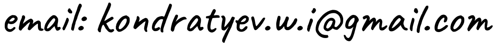

Hello! I'm Vladimir Kondratyev, a software engineer and researcher with a strong interest in applied mathematics, Bayesian statistics, and uncertainty quantification. I currently pursue a PhD in statistical machine learning at MBZUAI, under the supervision of Maxim Panov and Eric Moulines. Over the course of my studies and professional experience, I've completed a variety of projects—ranging from simple front-end development to the design and implementation of complex machine learning systems. I'm currently based in France and always open to collaborations—feel free to reach out!
Inspired by this simple website.